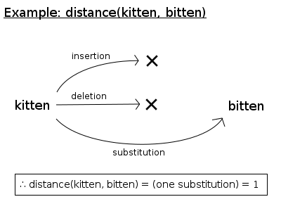

The key concept of fastcomp is edit pattens. As an example, consider the statement: LevenshteinDistance(str1, str2) is 1. This statement can be rephrased as "We can transform str1 to str2 with one insertion, deletion or substatitution." This means that we can verify the original statement by checking if applying any of these edit patterns (insertion, deletion, or substitution) to str1 will produce str2.
This is exectly how fastcomp measure the edit distance between input strings. Internally, fastcomp holds the computational models of possible edit patterns, and try to apply each pattern to the inputs.

So why this can be fast? The crucial point is that you can omit the most of edit patterns before actually applying them.